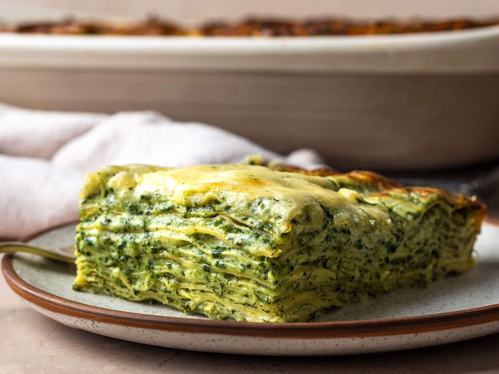

Spinach Lasagna

Description
Most store-bought ricotta is terrible. Look for a brand like Calabro, which contains nothing more than milk, salt, and either an acid or starter. If quality ricotta is unavailable, substitute cottage cheese instead.
Ingredients
-
2 tablespoons butter, divided
- 2 tablespoons extra-virgin olive oil
- 1 shallot, finely minced (about 1/2 cup)
- 6 medium garlic cloves, minced (about 2 tablespoons)
- Kosher salt and freshly ground black pepper
- 2 pounds fresh flat or curly spinach leaves, washed and dried
Steps